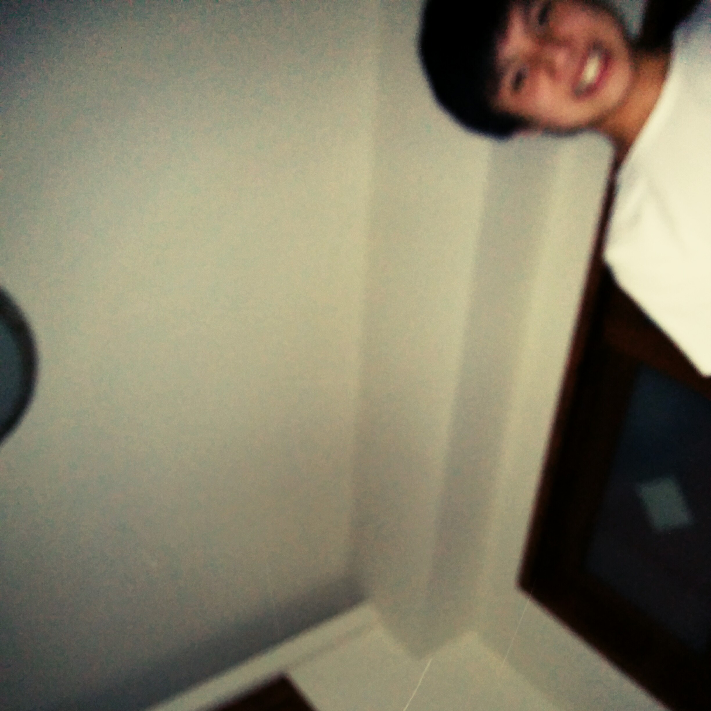

About Me: |
Written by Chiayo Lin | JUL 04, 2014 | Taipei, Taiwan

A picture of me :DChiayo Lin is the founder of this site. He is a Taiwanese, not a Chinese (He hates people call him Chinese), and he stands for Taiwan independence. On April 10, 2013, he moved to Ho Chi Minh City, Vietnam. He is interested in Linux administration, computer programming, and electrical engineering. However, the reasons why he created this site is because he wants to share his thoughts, life experiences, and his knowledge on computer science to every individual with free internet access on the earth. Peace ☮ :)